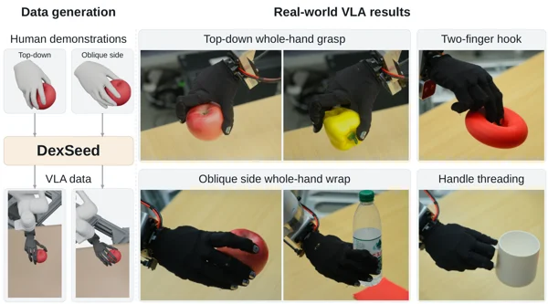
Huaijin Pi
I am a third-year CS Ph.D. student at the University of Hong Kong, advised by Prof. Taku Komura.
I got my M.Eng in Computer Science from Zhejiang University in 2024, where I was advised by Prof. Xiaowei Zhou at the State Key Laboratory of CAD&CG. I obtained my B.Eng in Control Science and Engineering with an honor degree at Chu Kochen Honor College in 2021.
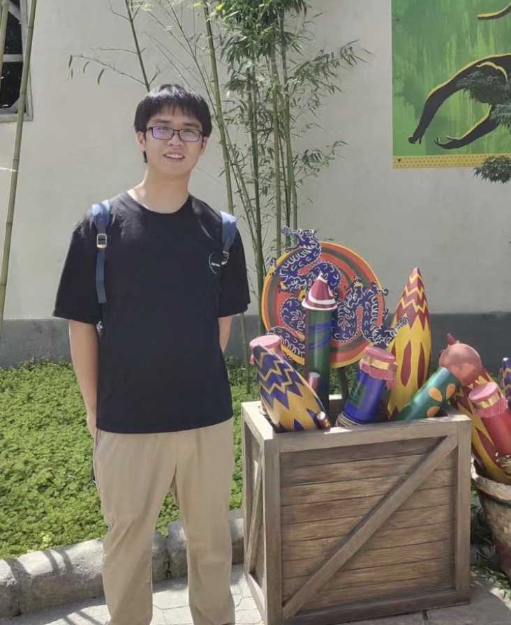
Recent News
- [2026.03] Two papers got accepted by Siggraph 2026!
- [2026.02] Three papers got accepted by CVPR 2026!
- [2025.09] One paper got accepted by NeurIPS 2025!
- [2025.06] Two papers got accepted by ICCV 2025!
- [2025.01] One paper got accepted by ICLR 2025!
- [2024.07] One paper got accepted by Siggraph Asia 2024!
Publications
* indicates equal contributions. Hover over a preview or select Demo to play.
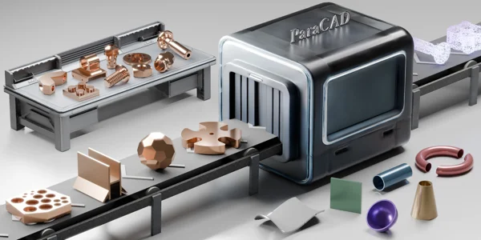
Autoregressive B-Rep Shape Generation with Parametric Surfaces
SIGGRAPH, 2026
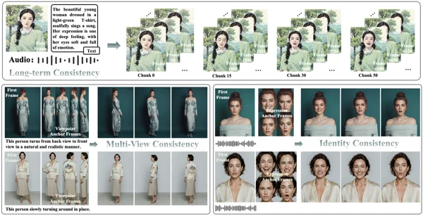
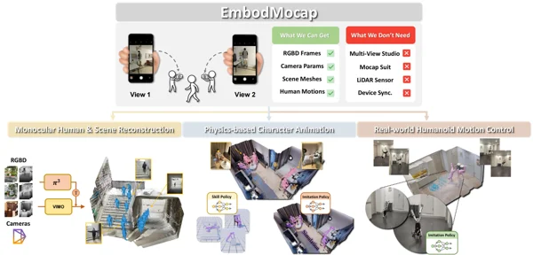
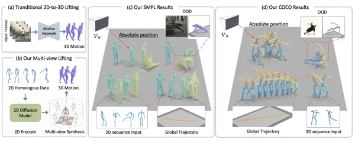
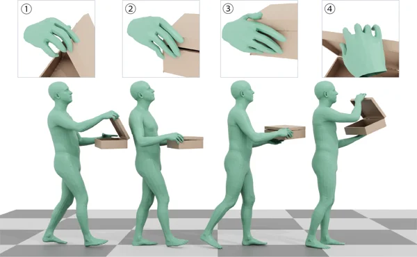
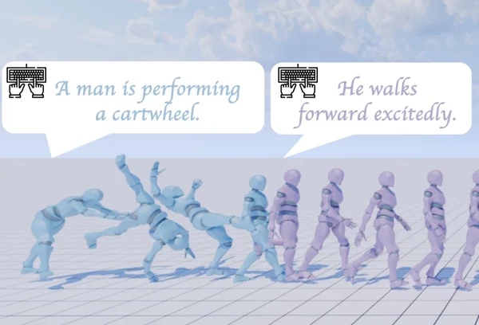
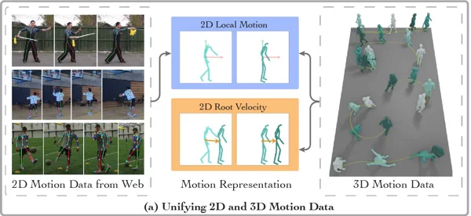
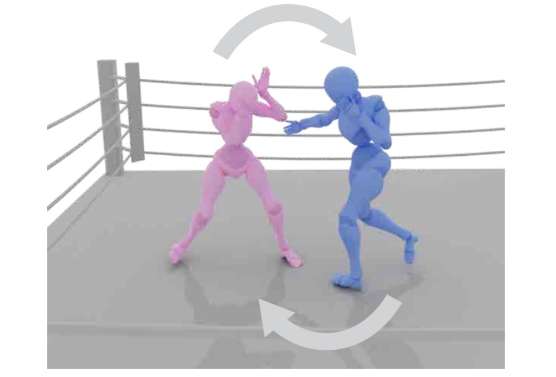
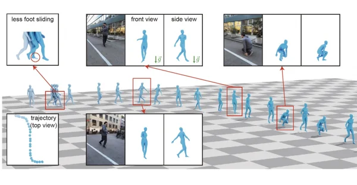
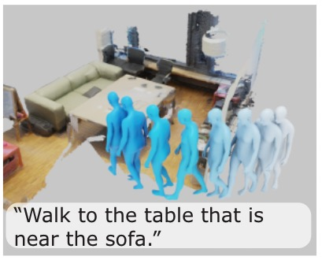
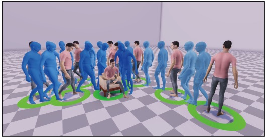
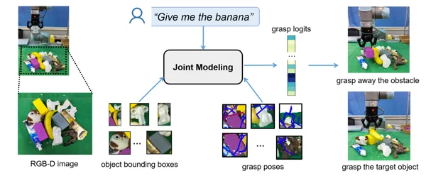
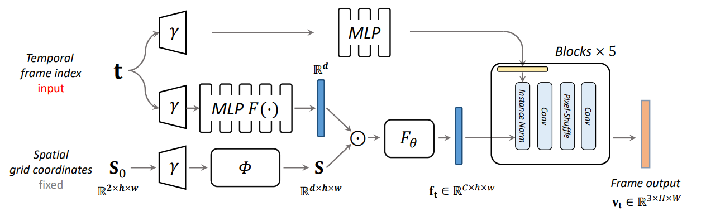
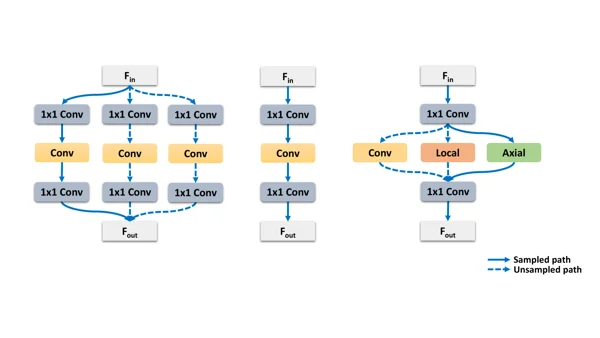
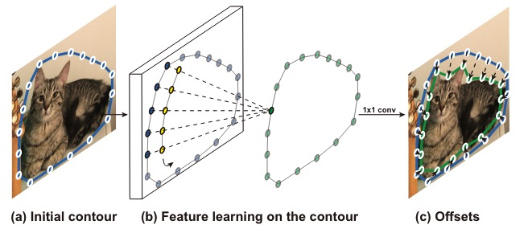
Internships
Ant Group
Research Intern · Mentor: Zehong Shen
Mar. 2026 – Sep. 2026
Anuttacon
Research Intern · Mentor: Xin Tong
Jun. 2025 – Dec. 2025
Services
Reviewer of IJCV, TVCG, SIGGRAPH Asia, CVPR, ICCV, ECCV, ICLR, NeurIPS, ACM MM, 3DV.